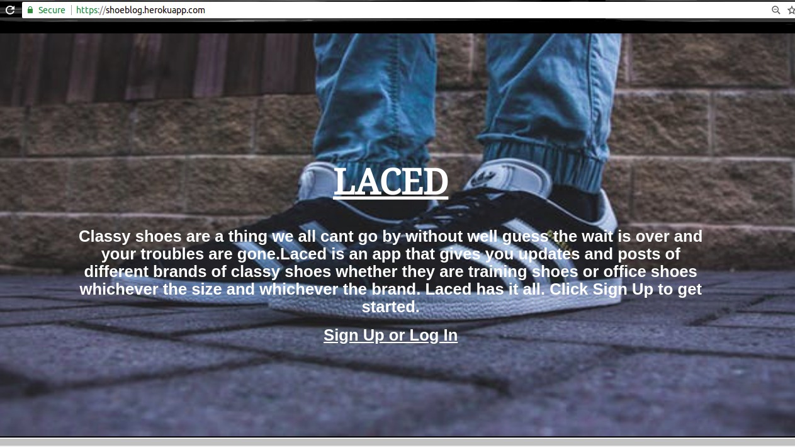
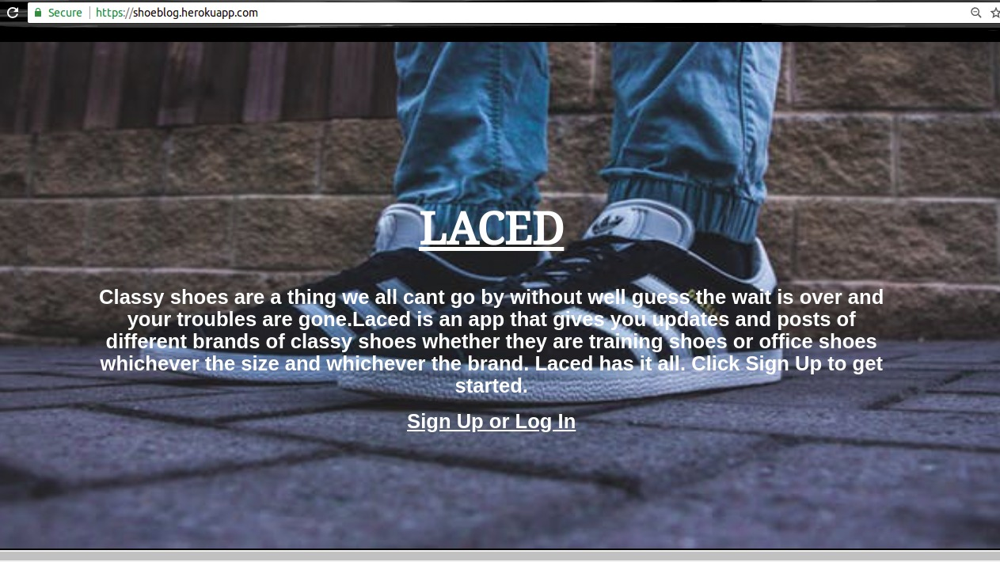

Projects
Laced.
A django based application that allows a user to see lates posts about shoes and can also post about their shoes according to the name or brand.
A django based application that allows a user to see lates posts about shoes and can also post about their shoes according to the name or brand.
